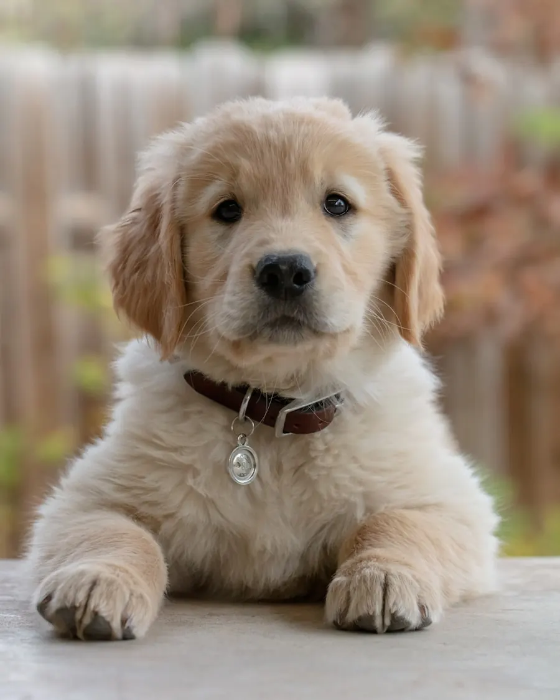

Jak rozčesat zacuchanou a zplstnatělou srst
Zacuchance nejsou jen kosmetická vada. Stahují kůži, brání jejímu dýchání a každý pohyb pejska tahá – proto na rozčesávání jděte s citem, správným nářadím a hlavně včas.

Nejdřív to nejdůležitější: zacuchaného psa nekoupejte
Přesně proto v salonu nemůžeme přijmout „jen na stříhání“ psa, který přijde zacuchaný a nevykoupaný zároveň – nejde to stihnout v čase vyhrazeném pro střih a výsledek by nestál za to.
Co budete potřebovat
- Kartáč „slicker“ (s jemnými zahnutými drátky) – základní nástroj na rozpracování uzlíku.
- Kovový hřeben s řidšími a hustšími zuby – na finální kontrolu, jestli jste opravdu u kůže.
- Rozčesávací sprej (detangler) nebo zředěný kondicionér – usnadní skluz a šetří srst i nervy.
- Pamlsky a klid. Vážně – spěch je u rozčesávání největší nepřítel.
Postup krok za krokem
- Najděte všechny uzlíky. Projeďte psa prsty až ke kůži – typická místa jsou za ušima, v podpaží, na bříšku, na vnitřní straně stehen a kolem obojku.
- Uzlík přidržte u kůže. Druhou rukou ho uchopte mezi prsty, aby tahání nešlo do kůže – pes pak spolupracuje mnohem ochotněji.
- Rozčesávejte od konců, ne od kůže. Krátké jemné tahy slickerem na špičce uzlíku, postupně se propracovávejte hlouběji. Nikdy „nepilujte“ silou skrz celý uzlík najednou.
- Velký uzlík rozdělte. Prsty ho roztrhněte po směru růstu srsti na menší části a každou řešte zvlášť.
- Zkontrolujte hřebenem. Hřeben musí projít až od kůže ke konečkům bez zadrhnutí. Pokud drhne, uzlík tam pořád je.
Rozčesávejte po menších dávkách – radši třikrát po deseti minutách než hodina v kuse, po které budete mít vy i pes z kartáče trauma.
Kdy už to doma nezachráníte
Pokud je srst slehlá do souvislých plstnatých ploch (tzv. zadredovaná), nemá smysl psa trápit hodinami tahání. V salonu plsť bezpečně odstraníme – někdy rozčesáním (240 Kč / 15 min), u pokročilé plsti je k psovi nejšetrnější srst zkrátit strojkem a nechat narůst novou, zdravou. Poradíme vám na místě, co je pro pejska nejlepší.
Prevence je levnější než záchrana
- Česejte pravidelně až ke kůži – povrchové uhlazení uzlíky nevidí. U jorkšírů a podobných plemen 3–4× týdně, návod najdete v článku jak často stříhat jorkšíra.
- Po každé procházce v dešti nebo sněhu psa vysušte a pročešte – mokro je spouštěč cuchání.
- Pozor na místa tření: obojek, postroj, svetřík. Po sundání vždy pročesat.
- Choďte na pravidelné střihy – kratší udržovaná srst se prostě necuchá.
Na zacuchance jsme dvě
Rozčesání zplstnatělé srsti šetrně a bez sedativ – Praha 13 Lužiny.